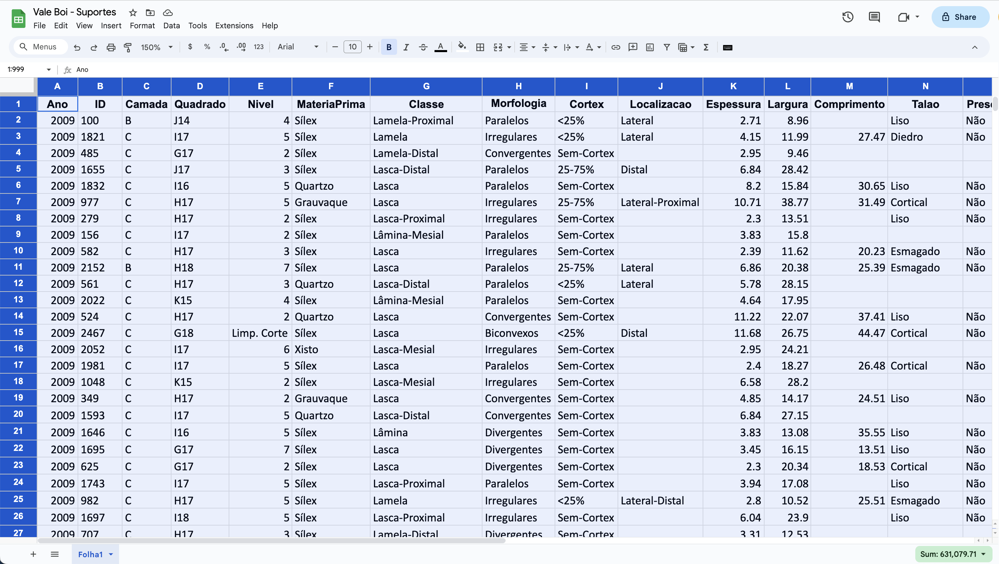
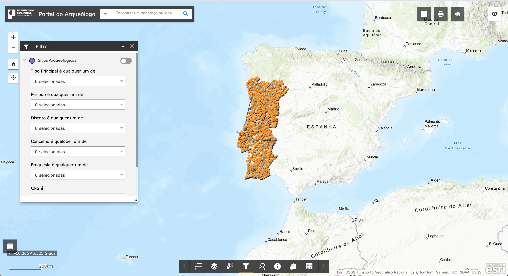
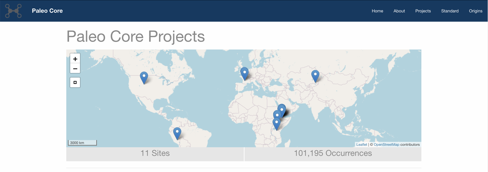

2 Tipos de bases de dados
Uma base de dados é um repositório de informação relacionada com um determinado assunto ou finalidade, ou seja, é uma coleção de dados ou itens de informação estruturados de maneira específica, que permite a sua consulta, atualização e outros tipos de operações processadas por meios informáticos. Serve para gerir vastos conjuntos de informação de modo a facilitar a organização, manutenção e pesquisa de dados. Existem vários tipos de bases de dados digitais, incluindo bases de dados relacionais, NoSQL, orientadas a objetos, multimodais, espaciais, entre outras. Em Arqueologia, são utilizados, sobretudo, três tipos principais de bases de dados: folhas de cálculo, bases de dados relacionais e bases de dados espaciais.
2.1 Folhas de cálculo
Uma folha de cálculo é um tipo de ficheiro para armazenamento de dados, onde os dados são guardados numa estrutura semelhante a uma tabela. É, em certo sentido, muito semelhante ao sistema de quadrícula arqueológica usado para identificar unidades de escavação, com linhas horizontais (normalmente identificadas com números) e colunas verticais (normalmente identificadas com letras) (McPherron and Dibble 2002). A intersecção entre uma linha específica e uma coluna específica denomina-se célula. Numa folha de cálculo utilizada como base de dados, cada linha representa um registo, cada coluna representa um campo e cada célula contém os valores observados.
Em Arqueologia, as folhas de cálculo são amplamente utilizadas para a recolha e análise de dados. A sua principal vantagem reside na simplicidade e na capacidade de serem lidas pela maioria dos programas mais utilizados para análises quantitativas de dados (como MS Excel, Google Sheets, SPSS, entre outros), sistemas de gestão de bases de dados (por exemplo, MS Access) e linguagens de programação (por exemplo, R, Python). Muitas ferramentas de transformação de dados e bibliotecas de programação oferecem suporte integrado para a leitura e escrita destes ficheiros, tornando-as uma escolha popular para a troca de dados em vários domínios Fig. 2.1.
Os formatos mais comuns e aconselháveis para este tipo de base de dados são os CSV (comma-separated values) e TXT (ficheiro de texto simples). Nos ficheiros CSV, os campos são sempre separados por vírgulas. Já nos ficheiros TXT, os campos podem ser separados por vírgula, ponto e vírgula ou por tabulação. Ao contrário de outros formatos, estes são completamente abertos do ponto de vista do licenciamento e, por essa razão, são facilmente partilhados entre utilizadores que usem diferentes programas ou sistemas operativos. Além disso, por não precisarem de um programa específico, podem ser abertos e modificados até com um simples editor de texto.
Contudo, à medida que os requisitos de armazenamento de dados crescem em tamanho e complexidade, as folhas de cálculo podem tornar-se menos eficientes e escaláveis comparativamente às bases de dados relacionais, que oferecem capacidades mais avançadas de consulta, indexação e gestão de dados.
2.2 Bases de dados relacionais
As bases de dados relacionais são construídas com base nos princípios do modelo relacional, que define os dados como conjuntos de tabelas. De uma forma simplificada, uma base de dados relacional agrega várias folhas de cálculo ou ficheiros planos, que contêm informação distinta sobre o mesmo conjunto de dados.
A estrutura de uma base de dados relacional baseia-se no conceito de chaves ou identificadores únicos (em inglês, Globally Unique Identifier, ou GUID), que desempenham um papel vital na manutenção da integridade dos dados e no estabelecimento de relações entre tabelas. A seleção de uma chave primária é essencial, pois influencia o desempenho e a eficiência das consultas e das junções na base de dados. Eis algumas das principais características das chaves primárias:
Unicidade: Cada valor presente na coluna da chave primária deve ser único. Esta característica assegura que não existam dois registos na mesma tabela com o mesmo identificador.
Não-nulidade: Uma chave primária não pode conter valores NULL (i.e., nulos). É imperativo que cada registo na tabela possua um valor de chave primária válido e não nulo.
Imutabilidade: Idealmente, os valores atribuídos às chaves primárias não devem ser alterados após a sua atribuição a um registo. Isto garante a consistência e previne potenciais problemas na referência de dados.
Coluna única ou chave composta: Uma chave primária pode ser composta por uma única coluna ou por uma combinação de múltiplas colunas. Neste último caso, é designada por chave composta.
Um exemplo prático de uma base de dados relacional é a utilizada pelo software Newplot, um programa de código aberto (i.e., open source), desenvolvido para a gestão de dados provenientes de escavações arqueológicas. O Newplot funciona sobre uma base de dados relacional em MS Access, que compreende várias tabelas, sendo as mais significativas as tabelas Context e XYZ. A tabela Context armazena informação sobre determinados artefactos ou conjunto de artefactos e o contexto da sua descoberta (e.g., unidade estratigráfica, tipo de material). Por sua vez, a tabela XYZ regista informações espaciais relativas à proveniência desses artefactos, incluindo as coordenadas tridimensionais x, y e z. Ambas as tabelas estão interligadas por uma chave primária composta, representada pelas variáveis UNIT e ID, que correspondem, respetivamente, ao quadrado, área de escavação ou sítio arqueológico (e.g., A1, L15, Abrigo, Vale Boi), e a um número sequencial de identificação. A combinação UNIT e ID deve ser única em toda a base de dados. Por exemplo, em toda a base de dados, apenas um objeto pode ter como chave primária “A1-100”, permitindo correlacionar as suas coordenadas na tabela XYZ com a respetiva informação contextual na tabela Context. Em certos casos, torna-se necessário registar múltiplas coordenadas tridimensionais para um único objeto, com o objetivo de recolher dados relativos à sua orientação ou às suas dimensões e morfologia geral. No entanto, esta metodologia implica a criação de mais do que um registo na tabela XYZ para cada objeto. A base de dados do Newplot está preparada para aceitar várias entradas na tabela XYZ para um único objeto, mantendo o mesmo conjunto UNIT-ID, mas adicionando uma outra variável, denominada SUFFIX. Neste caso, a relação entre as tabelas Context e XYZ é caracterizada como um-para-múltiplos (1:M), em que várias entradas em XYZ correspondem a uma única entrada em Context.
2.3 Bases de dados espaciais
As bases de dados espaciais constituem um tipo especializado de bases de dados, concebidas para armazenar, gerir e processar dados espaciais ou geográficos. Desempenham um papel crucial em diversas aplicações que necessitam de informações baseadas na localização, como é o caso dos Sistemas de Informação Geográfica (SIG), a monitorização ambiental, o planeamento urbano, a logística, os serviços baseados na localização e, claro, em Arqueologia. Estas bases de dados estão equipadas com técnicas avançadas de indexação espacial e capacidades de consulta espacial, as quais permitem a recuperação e análise eficientes de dados espaciais. Facilitam a representação de objetos geométricos simples, tais como pontos, linhas e polígonos, e, em certos casos, são também capazes de lidar com estruturas mais complexas, como objetos tridimensionais e redes triangulares irregulares (conhecidas em inglês como Triangulated Irregular Network ou TIN).
Quase a totalidade do trabalho de campo arqueológico produz grandes quantidades de informação baseada na localização, seja de sítios arqueológicos ou de objetos encontrados num determinado sítio arqueológico. A proveniência de cada artefacto e amostra é crucial para entender a sua idade, tafonomia, contexto ecológico, contexto cultural e significado comportamental. Assim, a proveniência espacial de um objeto é frequentemente tão importante quanto o próprio objeto. Esta realidade torna a utilização de bases de dados espaciais em Arqueologia particularmente vantajosa, especialmente quando os dados geográficos incluem coordenadas absolutas, referenciadas a um datum e a um sistema de projeção específicos.
Um exemplo do uso de uma base de dados espacial para consulta online do inventário de sítios arqueológicos de Portugal Continental é o Geoportal da Direção Geral do Património Cultural Fig. 2.2. Esta base de dados utiliza o formato Geodatabase da ESRI, um formato proprietário usado pelo conjunto de software ArcGIS da ESRI. Este formato oferece um modelo de dados espaciais abrangente, que inclui diversos tipos de dados, como pontos, linhas, polígonos e dados raster.

Outro exemplo disponível para consulta é o projeto PaleoCore (Reed et al. 2015), uma plataforma online dedicada à gestão de dados arqueológicos, paleontológicos e geológicos, com foco particular nos períodos Pliocénico e Pleistocénico Fig. 2.3. A base de dados deste projeto é suportada por software de acesso aberto, incluindo a extensão PostGIS do popular sistema de gestão de bases de dados relacionais PostgreSQL. O PostGIS adiciona suporte para a gestão e análise de dados espaciais, convertendo o PostgreSQL num sistema de bases de dados espacial completo, que inclui tipos de dados espaciais específicos, índices espaciais e funções espaciais.
